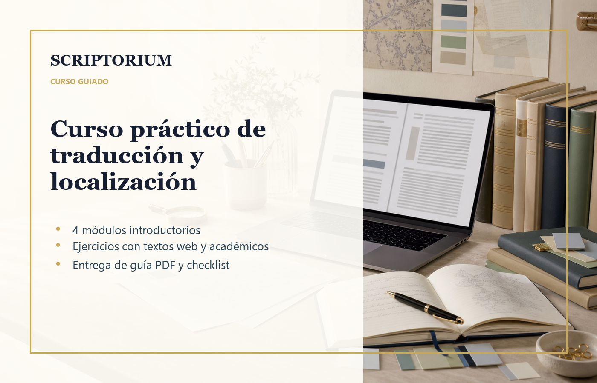

Programa piloto
Traducción y localización práctica
Para personas que quieren entender cómo cambia un texto cuando pasa a otro idioma: tono, lector, formato, glosario, contexto cultural y revisión.
- Temario base de 4 módulos introductorios.
- Ejercicios con textos web y académicos.
- Incluye guía PDF y checklist editable.